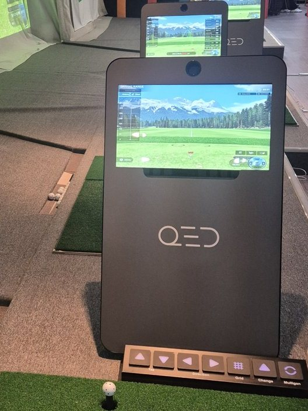

스크린골프는 다 비슷하다고 생각하기 쉽습니다. 어차피 스크린에 공 날아가는 그림이 나오는 거 아닌가, 싶죠. 그런데 타석 앞에 서면 그 생각이 조금 부끄러워집니다. 콘솔 생김새부터 다르고, 화면에 뜨는 숫자의 양이 다릅니다.
QED는 초당 3,000프레임이 넘는 초고속 카메라 두 대로 클럽과 공이 만나는 순간을 찍는 방식입니다. 제조사 안내를 보면 카메라 두 대에 적외선 LED를 붙여 임팩트 전후를 기록하고, 그걸로 클럽 경로와 페이스 각도까지 20가지가 넘는 지표를 뽑아냅니다.
클럽 스피드로 값을 계산해 보여주는 장비와 다르다고 제조사가 강조하는 부분이 이겁니다. 클럽이 공을 맞히는 장면을 영상으로 돌려주기 때문에, 숫자와 그림을 같이 볼 수 있습니다.
이 흐름은 연습장 전체에서도 보입니다. 11월 10일 스포츠서울 기사는 겨울 연습장 트렌드를 ‘레이더에서 카메라로’라고 정리했습니다. 메이저리그가 2020년부터 트랙맨(레이더)을 호크아이(카메라)로 바꾸면서 중계가 달라졌듯, 연습장도 숫자를 읽는 곳에서 궤적을 보는 곳으로 옮겨가는 중이라고요.
공이 오른쪽으로 밀렸을 때, 느낌으로는 ‘손이 먼저 나갔다’고 생각합니다. 화면은 그걸 두 갈래로 갈라 줍니다. 클럽 페이스가 열린 채로 맞았는지, 클럽 경로가 밖에서 안으로 들어왔는지. 둘은 고치는 방법이 완전히 다릅니다.
그래서 QED 타석에서는 한 가지 숫자만 정해 놓고 치는 게 좋습니다. 오늘은 페이스 각도만, 다음엔 클럽 경로만. 다섯 개를 한꺼번에 보면 머리가 먼저 지칩니다.
부산 해운대구 해운대로774번길 11, 해천빌딩 6층입니다. 장산역 13번 출구에서 173m, 대림아크로텔 옆 건물입니다. 김캐디 등록 기준으로 QED 4타석과 일반 3타석이 있습니다. 화면 보면서 연습하고 싶은 날은 QED 쪽, 그냥 시원하게 치고 싶은 날은 일반 쪽입니다.
요금은 매장 1층 배너와 네이버 지도 가격표 기준으로 스크린 18홀 10,000원, 연습장 1시간 10,000원입니다. 운영 시간은 네이버 지도에 24시간 연중무휴로, 김캐디에는 00:00~23:30으로 적혀 있어 표기가 갈립니다. 늦은 시간에 갈 생각이라면 전화로 먼저 확인하세요.
051-747-9933타석과 스크린 룸, 단체 이용은 전화로 예약하시는 게 가장 빠릅니다.